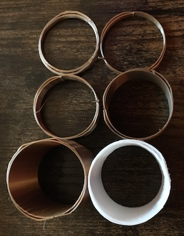

My first print!
This week was an adventure to say the least! I have been looking forward to learning how to 3D print for a few
months now. When I learned I would be purchasing my own machine I was surprised by how relatively cheap the machine was. When the Ender 3 Pro
arrived, I was very intimidated to put it together. My partner surprisingly was really excited and wanted to help.
The first half of the assembly went pretty smoothly. When we started to assemble the Z bar that's when things took a confusing
turn. I couldn't figure out how to square up the attachments
and was becoming defeated. Then, I decided to look online to see if anyone had a helpful video for assembly. Thankfully, I found
this video
by Just Vlad which was super helpful. We followed his instructions until the end and had an easy time assembling the rest of the
machine. It took us about 2 hours to assemble.
Disclaimer, I am still pretty new to coding, so I haven't figured out how to horizontally align pictures with
text yet.
Leveling the bed was far more difficult. I downloaded the bed leveling files, but didn't understand the directions correctly. This led to some damages. I misunderstood the instructions and thought I had leveled it correctly, but when I started the printing disaster struck. The nozzle was too close to the bed. Once I heard that awful sound I immediately raced over to my machine and flipped the off switch. Now I have two punctures and a faint line where the printing path began. Once I figured out the proper height I was able to complete a successful level bed print.
All of these prints were rendered in Rhino 7 and sliced in Cura 4.8.
Once I finally got my printbed leveled I started with the cubes. I was able to print low, standard, and super quality cubes. After that I decided to make the concentric cube with the standard quality - I really enjoy the pattern that the concentric pattern created. Thankfully, I experienced no issues printing these cubes.

low quality
L: 2.01cm W: 2.01cm H: 2.00cm T: 23 mins

standard quality
L: 1.97cm W: 2.01cm H: 2.01cm T: 27 mins
superior quality
L: 1.9cm W: 2cm H: 2cm T: 50 mins

concentric with standard quality
L: 1.99cm x W: 2.00cm x H: 2.00cm T: 29 mins
Next, I worked on the cylinders. These turned out pretty well. When I first started printing I kept getting a weird bumpy print around the seam and I didnt' understand why. After some Googling I learned that I should increase the tolerance of my max resolution (to .5) and max travel resolution (to .5) and that helped! It was great to see and understand the printing difference that happens between a .1 tolerance and a .001 tolerance model. I think this will come in handy in the future. Additionally, when I first started printing the cylinders they wouldn't adhere to the bed in the top right corner. I ran a level bed print and it was successful, so I decided to try to print tubes and the cube with the extraction to see if it was specific to the cylinders, but still the issue remained, so I adjusted the back right corner anyway and that solved the issue!

.1 tolerance
D: 2.99cm H: 3.01cm T: 53 mins

.001 tolerance
D: 2.99cm H: 2.99cm T: 52 mins

spiralized
D: 3.00cm H: 3.01cm T: 30 mins
supported
L: 2.98cm H: 2.98cm T: 1 hr 3 mins
The tubes were and still are a struggle. When I first began I was having the same adherence issues as previously stated. Once I was able to
get the tubes to adhere I thought it would be smooth sailing, but I am having issues with my walls sticking together. I have tried multiple
speeds including 50, 25, 10. I tried changing between lines and concentric. I adjusted the max resolution and max travel resoultion to .5. I
tried a brim version and a cap version as well because I thought maybe those settings would help the walls adhere. I even tried a skin overlap
of 20 to no avail. When I tried searching on
the internet I couldn't find any additional helpful info, and Junchao wasn't sure about the problem either. At first he thought maybe it was my
filament but we found out we have the same kind and he hasn't experience this issue. Just when I thought it couldn't be solved, Professor Nadya suggested
it could be that my belt that moved the platform bed was too loose. She was right! I was able to tighten the belt and successfully finish both prints.
single extrusion
D:2.97cm H:3.00 Thickness: .85mm T: 41 mins
double extrusion with Z seam alignment
D:2.97cm H:2.99 Thickness: 1.66mm T:1 hr 16 mins

a selection of the failed prints
It took about 4 prints to get the cube with the extruded cylinder. My first and second attempts did not adhere to the printbed. For
the third print I thought maybe this was a trick question
and I printed it on its side and added a support in the middle. That was a successful print, but when I tried to extrude the support
from the middle I broke the cube. (See below in fails section for image.)
I tried to print the 4th version after I adjusted the corner of the bed as above, and that worked! I used the low quality setting with
a brim.

T:29 mins
Check out some highlights from my blooper reel.
Although I haven't figured out how to adhere my tube walls, I did have a lot of fun this week learning how to 3D print. I am excited to learn new techniques in the coming weeks and to be able to build cool pieces.